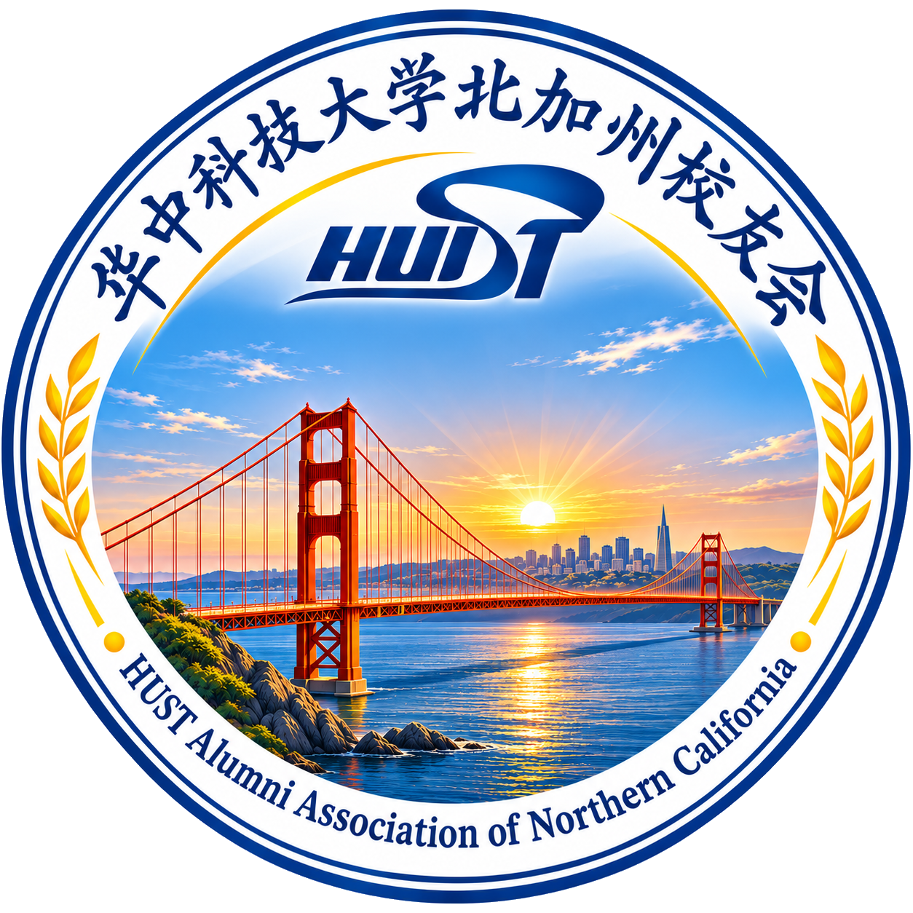

AI 产业全景
从芯片、算力到模型与应用

北美 HUST 2027 年会华中科技大学北美企业家协会成立十周年庆典与第六届年会，暨华中科技大学北加州校友会第十七届硅谷论坛。大会通过主旨演讲、产业论坛、邀请制闭门专题会和校友创新项目展示，连接技术、产业、资本与全球合作机会。
从芯片、算力到模型与应用
企业 AI 如何创造真实价值
企业采购、ROI 与规模化应用
与知识产权
下一轮增长机会
及医学研究
议程草案 · 均为太平洋标准时间（PST）。同一时段的两轨活动同时进行，闭门会采用邀请制。
会前主题预热、会后回顾与合作跟进。具体场次按通知参与。
白天高尔夫约 20 人；晚宴 18:00–20:30，邀请制，20–30 人。
主论坛 + 邀请制闭门会 · Q-Bay Center · 08:15–18:15 PST。
规划 60 人以上，促进跨地区交流；球场、开球时间及报名另行通知。
160 E Tasman Dr, San Jose, CA 95134
查看地图 ↗可选择圣何塞国际机场（SJC）或旧金山国际机场（SFO）。合作酒店及票务信息待公布。
年会秘书长 · 林战生 Alan Lin
svcafeorg@gmail.com